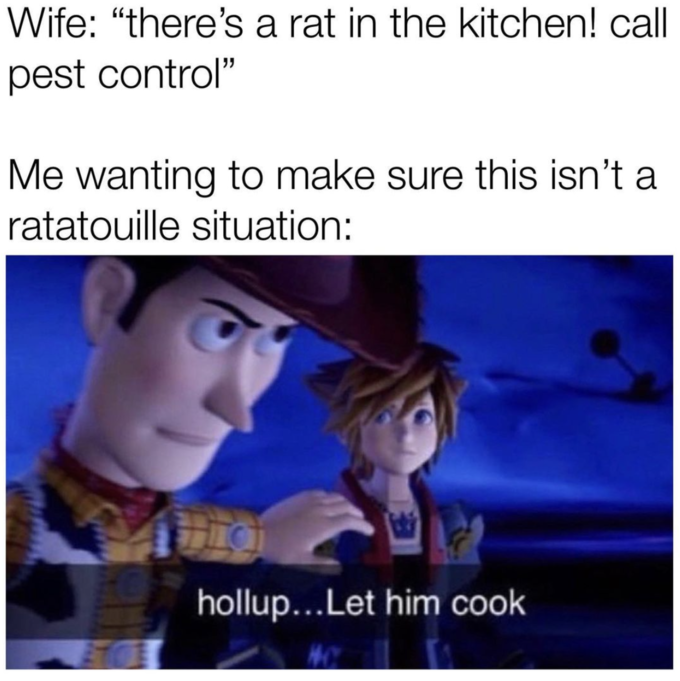

let him cook — ครัวเปลี่ยนหน้าเป็นอาหาร
คุณส่งหน้า เราเสิร์ฟอาหาร เชฟไม่รับผิดชอบรสชาติ
ไร้ประโยชน์ 100%
02 / ครัวเข้ารหัส · EMOCODEC
emoji encoder.
เปลี่ยนภาพจากครัวแรกให้กลายเป็นสูตรอีโมจิที่คัดลอกและส่งต่อได้
หั่นเป็นรหัส
01 / รับจานจากครัวแรก
รูปในครัวนี้ส่งให้เซิร์ฟเวอร์ EmoCodec บนเครื่องคุณประมวลผล
02 / สูตรอีโมจิที่ได้
ส่งรูปมาแล้วกดหั่น ผลลัพธ์จะเป็นรหัสอีโมจิ ไม่ใช่รูปที่ Decode แล้ว
คัดลอกสูตรหรือดาวน์โหลดไฟล์เพื่อส่งต่อไปครัวถัดไป- อีโมจิที่ใช้
- —
- ขนาดไฟล์ .emoc
- —
- บิตต่อพิกเซล
- —
รหัสอีโมจิของจานนี้
สูตรสำหรับครัวที่สามคัดลอกสูตรแล้ววางในช่อง Decoder ด้านล่างก็ได้ (คัดลอกทั้งรหัสและข้อมูลกำกับ)
03 / ครัวประกอบกลับ · EMOCODEC
emoji decoder.
เอาสูตรอีโมจิที่คัดลอกมาใส่ แล้วค่อยประกอบกลับเป็นรูปภาพ
คืนร่างให้จาน
01 / วางสูตรอีโมจิ
ต้องวางสูตรเต็มที่มีข้อมูลกำกับ ไม่ใช่เฉพาะตัวอีโมจิ หรือเลือกไฟล์ .emotxt / .emoc ที่บันทึกไว้
02 / จานที่ประกอบกลับ
ใส่สูตรแล้วกด “ประกอบกลับเป็นรูป” ภาพจึงจะปรากฏที่นี่
ภาพอาจไม่เหมือนต้นฉบับทั้งหมด เพราะเป็นการเข้ารหัสแบบสูญเสียรายละเอียดสูตรของ Encoder ต้องใช้โมเดลเดียวกันในการ Decode · หากนำรหัสมาจากที่อื่นให้เลือกไฟล์หรือวางสูตรเต็มก่อนเริ่มประกอบ
04 / ครัวปิดจบ · FOOD MATCH
the final dish.
ต่อให้เชฟประกอบหน้าคืนได้ ก็ต้องแอบเอาพิกเซลไปจัดเป็นอาหารอีกอยู่ดี
จบที่ของกิน
ส่งรูปที่ Decode แล้วจากครัวที่สามมาที่นี่ได้ทันที หรือโยนรูปอื่นเข้าไปเอง ครัวจะลองค้นจากภาพอาหาร 50,000 รูป แล้วจัดพิกเซลของคุณให้กลายเป็นอาหารจานที่หน้าตาใกล้เคียงที่สุด โดยไม่เปลี่ยนสีพิกเซลต้นทาง
พร้อมปิดออเดอร์หรือยัง? ยิ่งหน้าตาเหมือนอาหารเท่าไร ยิ่งน่ากังวลว่าเรามาถึงจุดนี้ได้อย่างไร
เลื่อนมาถึงครัวนี้เพื่อเริ่มโหลดฐานข้อมูลอาหาร
ระบบค้นหารูปอาหารใช้ดัชนีภาพ Food-101 ที่โฮสต์ไว้บน Food Match และต้องใช้อินเทอร์เน็ต ฐานข้อมูลนี้มีข้อจำกัดสำหรับการใช้งานวิจัย ภาพที่ส่งจาก Decoder ไปยัง Food Match จะประมวลผลในเบราว์เซอร์ของคุณ

“ใจเย็น... ให้เขาทำ”— คนที่ไม่ต้องกินจานนี้